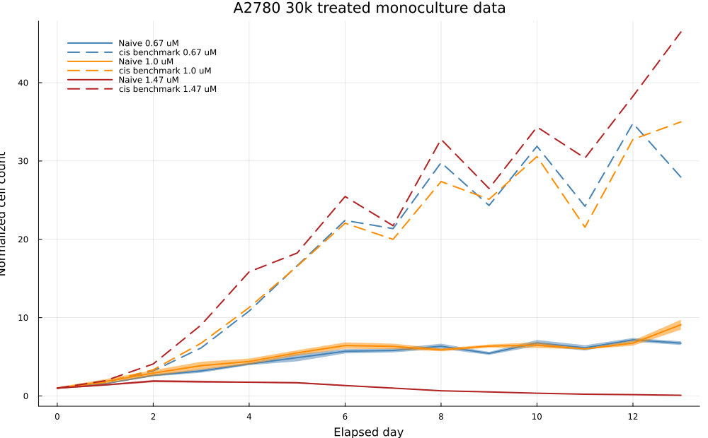
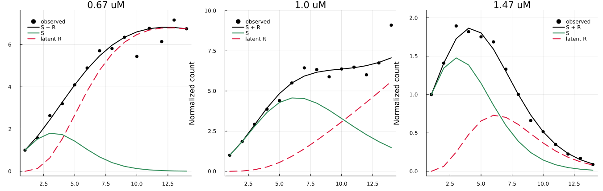
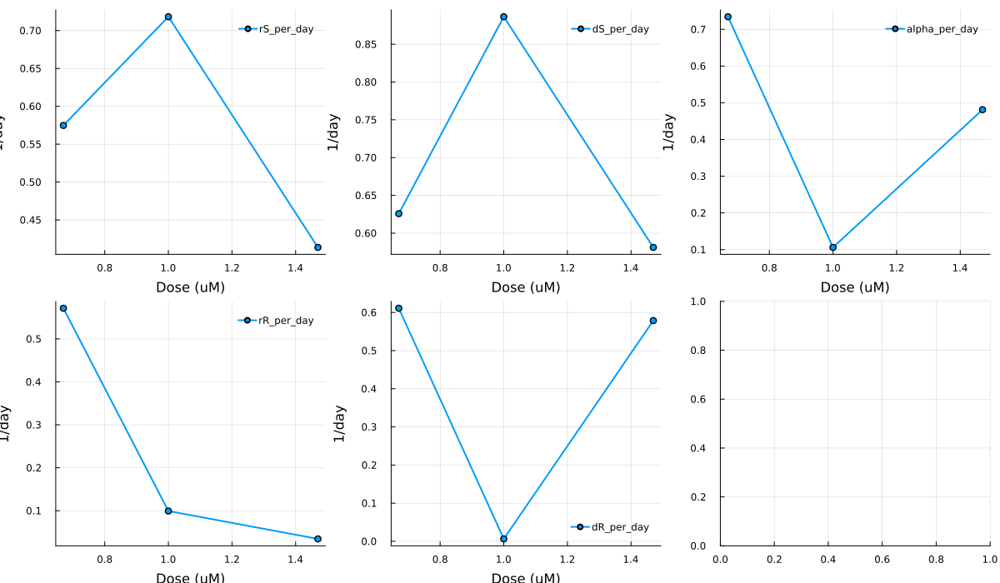
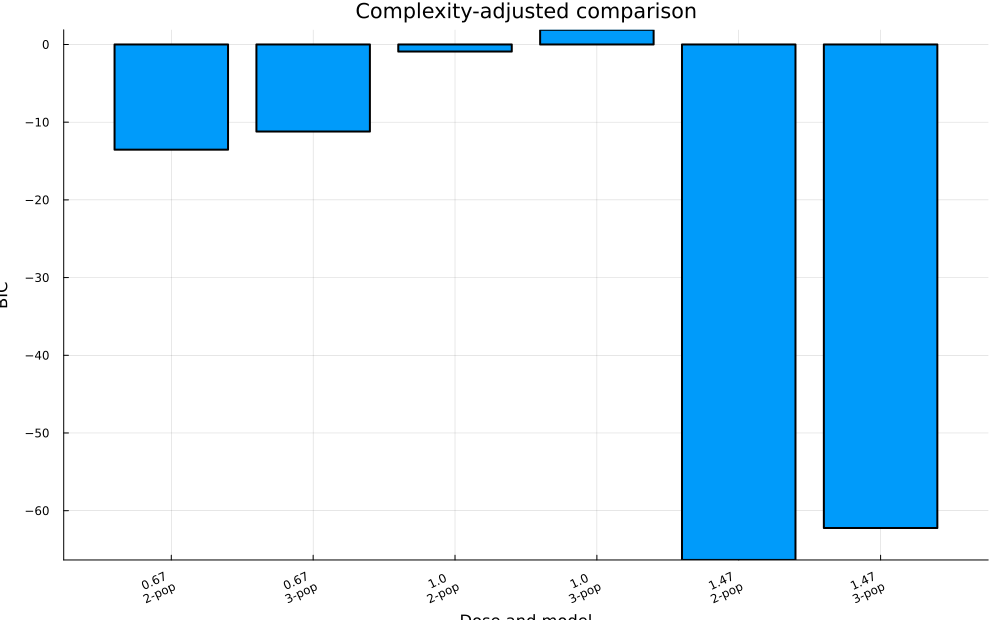
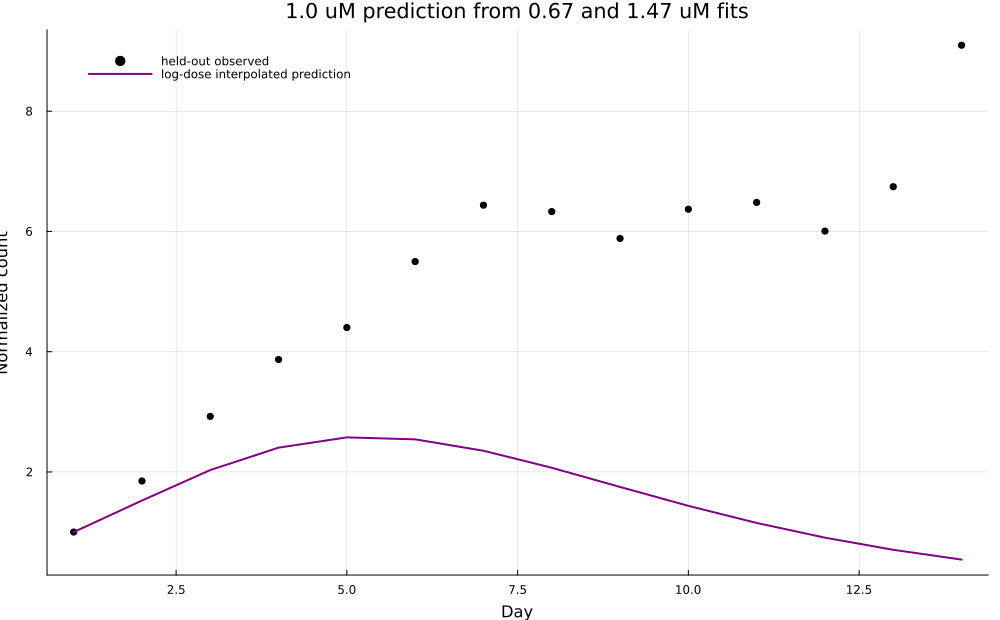
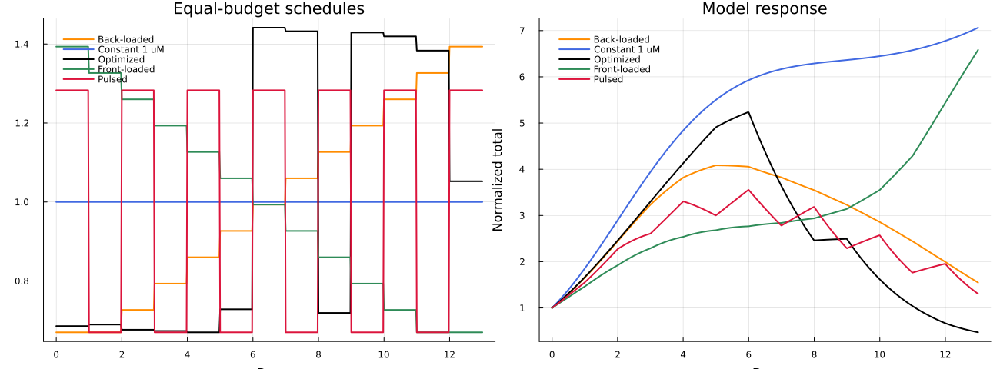
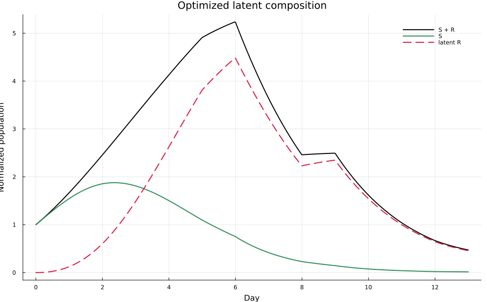

Models Used In The Paper
Two-population delayed-induction model
The paper fitted five dose-specific rates with \(r_R\le r_S\), \(d_R\le d_S\), fixed delay rates, an L1 objective, and initially \(S(0)=1,R(0)=0\).
Three-population quiescent extension
The paper found that adding \(Q\) did not visibly improve fit and weakened practical identifiability. Both candidates are fitted below.
Time-varying control model
A2780 Data And Adaptation
Inputs are the 30k A2780Naive treated-monoculture day averages at 0.67, 1.0, and 1.47 µM cisplatin. Counts are normalized to each condition's first measured day. The delay is fixed at 0.24/day, the unit-converted value of the paper's 0.01/hour. Fits use bounded differential evolution and the paper's L1 objective. The observation horizon is 13 elapsed days.
Dose-label correction: the historical processed-data splitter exchanged the endpoint folder names. Legacy folder IC25 contains the 1.47 µM source, IC50 contains 1.0 µM, and legacy folder IC75 contains the 0.67 µM source. This report applies the same canonical correction used by the main fitting workflow.

Measured A2780Naive trajectories used for fitting; A2780cis trajectories are shown as an external benchmark.
Dose-Specific Fits And Model Comparison

| dose_uM | corrected_condition | source_folder | rS_per_day | dS_per_day | alpha_per_day | rR_per_day | dR_per_day | L1 | BIC |
|---|---|---|---|---|---|---|---|---|---|
| 0.67 | IC25 | IC75 | 0.5748 | 0.6258 | 0.7342 | 0.5713 | 0.6111 | 3.0141 | -13.5409 |
| 1.0 | IC50 | IC50 | 0.7183 | 0.8864 | 0.1061 | 0.0993 | 0.0064 | 4.3024 | -0.9128 |
| 1.47 | IC75 | IC25 | 0.4137 | 0.5812 | 0.4811 | 0.0344 | 0.5787 | 0.4925 | -66.3437 |

Two versus three populations
| dose_uM | corrected_condition | source_folder | model | free_parameters | L1 | BIC |
|---|---|---|---|---|---|---|
| 0.67 | IC25 | IC75 | two population | 5 | 3.0141 | -13.5409 |
| 0.67 | IC25 | IC75 | three population | 6 | 3.0006 | -11.2067 |
| 1.0 | IC50 | IC50 | two population | 5 | 4.3024 | -0.9128 |
| 1.0 | IC50 | IC50 | three population | 6 | 4.4192 | 1.8872 |
| 1.47 | IC75 | IC25 | two population | 5 | 0.4925 | -66.3437 |
| 1.47 | IC75 | IC25 | three population | 6 | 0.4745 | -62.2317 |

Near-optimal parameter screen
Following the paper's 5% criterion, local parameter perturbations with L1 cost no more than 5% above the optimum are retained. Wide intervals indicate practical sensitivity even when an optimum is available.
| dose_uM | corrected_condition | source_folder | parameter | retained | lower_95 | median | upper_95 |
|---|---|---|---|---|---|---|---|
| 0.67 | IC25 | IC75 | rS | 1 | 0.5674 | 0.5674 | 0.5674 |
| 0.67 | IC25 | IC75 | dS | 1 | 0.5862 | 0.5862 | 0.5862 |
| 0.67 | IC25 | IC75 | alpha | 1 | 0.888 | 0.888 | 0.888 |
| 0.67 | IC25 | IC75 | rR | 1 | 0.5492 | 0.5492 | 0.5492 |
| 0.67 | IC25 | IC75 | dR | 1 | 0.5862 | 0.5862 | 0.5862 |
| 1.0 | IC50 | IC50 | rS | 4 | 0.7195 | 0.7216 | 0.7389 |
| 1.0 | IC50 | IC50 | dS | 4 | 0.8871 | 0.8903 | 0.9359 |
| 1.0 | IC50 | IC50 | alpha | 4 | 0.1032 | 0.1177 | 0.1289 |
| 1.0 | IC50 | IC50 | rR | 4 | 0.0888 | 0.0973 | 0.1096 |
| 1.0 | IC50 | IC50 | dR | 4 | 0.006 | 0.0067 | 0.0081 |
| 1.47 | IC75 | IC25 | rS | 3 | 0.4111 | 0.4163 | 0.4175 |
| 1.47 | IC75 | IC25 | dS | 3 | 0.545 | 0.6088 | 0.6377 |
| 1.47 | IC75 | IC25 | alpha | 3 | 0.3685 | 0.4229 | 0.5715 |
| 1.47 | IC75 | IC25 | rR | 3 | 0.0344 | 0.0371 | 0.0412 |
| 1.47 | IC75 | IC25 | dR | 3 | 0.545 | 0.6088 | 0.6129 |
Held-Out Dose Validation
The 1.0 µM condition is withheld. Parameters are interpolated linearly in log-dose from fits at 0.67 and 1.47 µM, matching the paper's validation logic.
| metric | value |
|---|---|
| held-out L1 | 49.9064 |
| held-out RMSE | 4.2721 |

Constrained Optimal Control
The 13-day horizon and 13 µM-day budget equal continuous 1 µM exposure. The dose is piecewise constant over daily intervals. All comparison schedules are projected to the same dose budget.
| schedule | final_total | final_sensitive | final_latent_resistant | dose_AUC | population_AUC |
|---|---|---|---|---|---|
| Optimized | 0.4722 | 0.0148 | 0.4575 | 13.0 | 34.2223 |
| Constant 1 uM | 7.0636 | 1.4742 | 5.5894 | 13.0 | 67.7453 |
| Front-loaded | 6.583 | 0.1525 | 6.4306 | 13.0 | 39.8177 |
| Back-loaded | 1.5477 | 0.0782 | 1.4695 | 13.0 | 38.4908 |
| Pulsed | 1.3038 | 0.0263 | 1.2775 | 13.0 | 31.9576 |


Findings And Limits
- The report tests whether the paper's minimal delayed-induction structure can reproduce the non-monotone A2780Naive dose trajectories.
- The held-out 1 µM prediction distinguishes interpolation from direct fitting.
- The optimized schedule is a model-derived in vitro hypothesis, not a clinical dosing recommendation.
- The latent \(R\) trajectory is not directly measured and must not be labeled A2780cis.
- No extrapolation beyond day 14 is used.